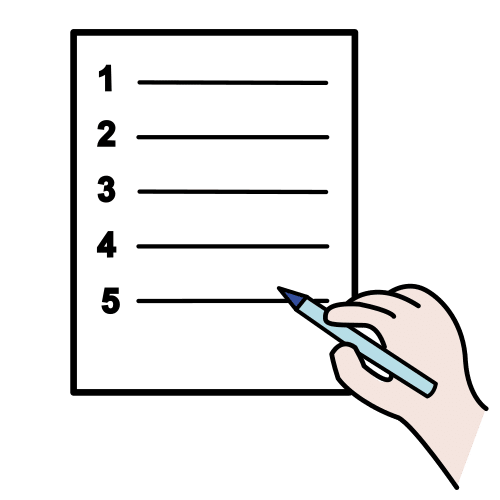

Departamento que tienen las empresas que se encarga de gestionar todo lo relacionado con las personas que trabajan en ella.
Ejemplo:
He recibido una llamada de recursos humanos para realizar una entrevista de trabajo.
1. De aspirante a trabajador
Ya tienes el teórico, vamos a por el práctico. Ya sabes cómo es un CV y las claves para afrontar con éxito una entrevista de trabajo. Ahora eres tú quien busca empleo y debes optar a un puesto ofreciendo lo mejor de ti en un currículum digital. Además, deberás prepararte adecuadamente para una entrevista con la dirección de RRHH de este parque de atracciones:
Definición:
Departamento que tienen las empresas que se encarga de gestionar todo lo relacionado con las personas que trabajan en ella.
Ejemplo:
He recibido una llamada de recursos humanos para realizar una entrevista de trabajo.
Lectura facilitada
Ya has conseguido aprender la teoría sobre cómo hacer un currículum vitae y afrontar una entrevista.
Ahora vamos a poner nuestros aprendizajes en práctica.
Ya conoces cómo es un currículum vitae.
También tienes una idea de cómo enfrentarte a una entrevista de trabajo.
Imagina que buscas empleo.
1º debes elaborar un buen currículum vitae digital que hable sobre tí.
2ª prepararás una entrevista para un puesto de trabajo del parque de atracciones que aparece en el siguiente video:
Apoyo visual
2. ¿Qué he aprendido?
En este último paso te voy a proponer que pienses en qué ha sido lo más importante de todo lo que has aprendido para conseguir el reto que te proponíamos.
Lo que descubras pensando en ello te servirá para cuando tengas que alcanzar retos parecidos en un futuro.
¡Para un momento y completa el PASO 4 de tu Diario de Aprendizaje (¿Qué he aprendido?)!
Recuerda:
Pregunta a tu profesor o profesora si la rellenarás en papel o en el ordenador.
Si la rellenas en el ordenador, ¡no te olvides de guardarla en tu ordenador cuando la termines! ¡Ánimo, que lo harás genial!
3. Se buscan
Volved a ver el vídeo y prestad especial atención para elaborar en grupo un listado de puestos de trabajo que se ofertan en el parque de atracciones. Cuando lo tengáis, lo compartiremos en gran grupo utilizando esta o alguna otra herramienta gratuita de creación de nubes de palabras. ¿Qué profesiones habéis detectado con mayor facilidad? ¿Cuál de ellas ha pasado más desapercibida? Completad la siguiente tabla con las tareas que pensáis que deben realizar los tres puestos de trabajo que aparecen más destacados en la nube de palabras de la actividad anterior.
Lectura facilitada
1. Mirad de nuevo el video anterior . Prestad mucha atención a los puestos de trabajo que se ofrecen en el video.
En grupo, elaborad un listado de los diferentes puestos de trabajo que veáis.
¿Qué profesiones habéis identificado de forma más rápida?
¿Qué profesiones os ha costado más identificar?
2. Teniendo en cuenta la nube de palabras realizada. Fíjate en los 3 puestos de trabajo más destacados.
¿Qué tareas pensáis que deben realizar las personas en esos 3 puestos de trabajo?
Pincha en la siguiente tabla y complétala.
Definición: Serie ordenada en columnas de palabras, nombres o datos.
Ejemplo: Voy a hacer el listado de alimentos que necesito comprar.
Apoyo visual
¿Te sientes preparado o preparada?
Por fin vamos a enfrentarnos al reto, ¿cómo te sientes?
Piensa en todo lo que has aprendido. Ahora es el momento de darle uso a esos aprendizajes. Ya verás qué divertido y útil te resulta trabajar en este reto.
¡Qué aventura! ¿Te imaginas trabajar en un parque de atracciones? Sería toda una experiencia. ¡Vamos a por ello!

 ienes el teórico, vamos a por el práctico. Ya sabes cómo es un CV y las claves para afrontar con éxito una entrevista de trabajo. Ahora eres tú quien busca empleo y debes optar a un puesto ofreciendo lo mejor de ti en un currículum digital. Además, deberás prepararte adecuadamente para una entrevista con la dirección de
ienes el teórico, vamos a por el práctico. Ya sabes cómo es un CV y las claves para afrontar con éxito una entrevista de trabajo. Ahora eres tú quien busca empleo y debes optar a un puesto ofreciendo lo mejor de ti en un currículum digital. Además, deberás prepararte adecuadamente para una entrevista con la dirección de